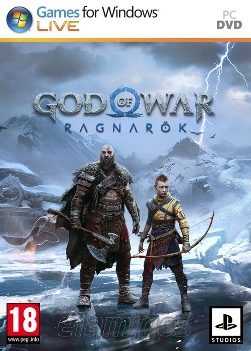

God of War Ragnarok Deluxe Edition (2024) 75.81GB
Género: Acción, Aventura, Hack and Slash
De la mano de Santa Monica Studio llega la secuela del aclamado God of
War.El Fimbulvetr está en marcha. Kratos y Atreus deben viajar a cada
uno de los Nueve Reinos en busca de respuestas mientras las fuerzas
asgardianas se preparan para la batalla profetizada que supondrá el fin
del mundo. Por el camino, explorarán paisajes míticos increíbles y se
enfrentarán a temibles enemigos, como monstruos y dioses nórdicos. La
amenaza del Ragnarök está cada vez más cerca. Kratos y Atreus deben
elegir entre su propia seguridad y la de los reinos.